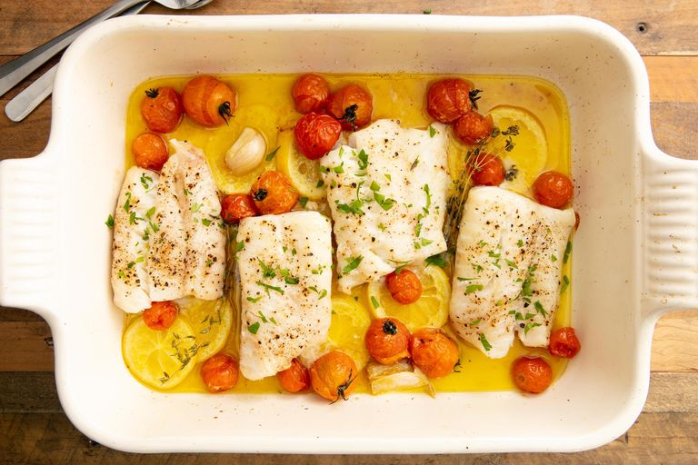

baked Cod
back to main

simple yet delicous.
Description
Dive into cooking seafood with this forgiving, flexible recipe. It cooks quickly and it'll go quickly.
Ingredients
- 4 cod filets
- salt and pepper
- 4 tbsp olive oil
- 1 cup cheery tomatos
- 1 sliced lemon
- 2 smashed garlic cloves
- 2 sprigs thyme
- 2 tbsp parsley
Steps
- Preheat the oven to 400° and pat cod filets with a paper towel until dry. Season all over with salt and pepper.
- Combine olive oil, cherry tomatoes, lemon slices, garlic, and thyme in a 9"-x-13" baking dish. Toss to coat and spread into an even layer. Nestle cod pieces into baking dish.
- Bake until fish is opaque and flakes easily with a fork, 15 to 20 minutes, depending on thickness of filets.
- Serve garnished with parsley, more lemon juice, and pan sauce.